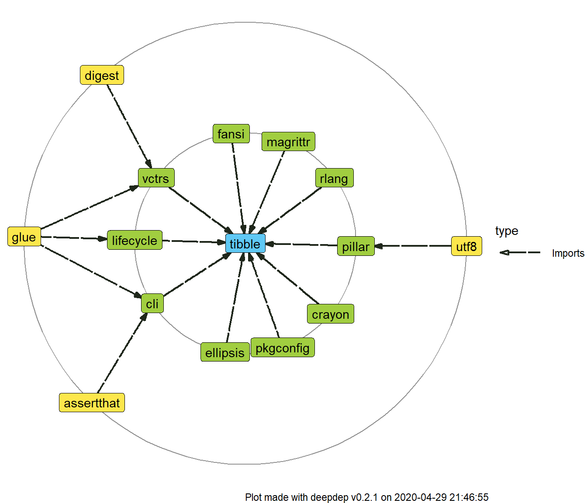
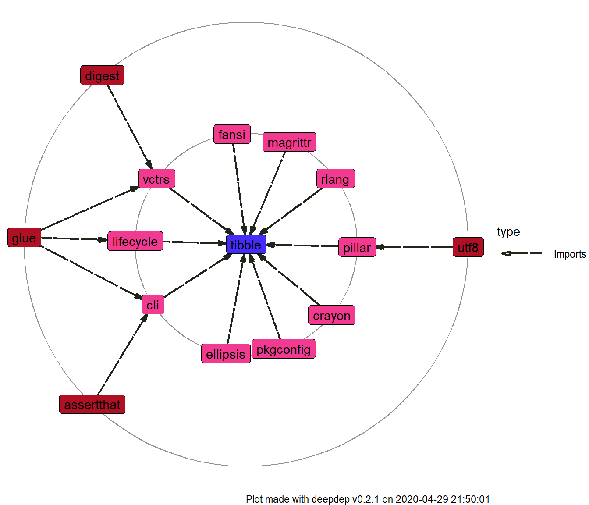

Introduction
Package deepdep was created to acquire and visualize information on dependencies of R packages in a smart and convenient way. Most of its functionality is contained in two functions: deepdep – to get a data.frame with dependencies described and plot_dependencies – visualize this data.frame.
library(deepdep)
Use case
Suppose you’re creating an R package and you want to include graph of its dependencies to your vignette, README.md file on your git repository or article on your package. With deepdep you simply need to type one line:
plot_deepdep("YourPackageName")
But before we describe how this function works in detail, let’s see what are other functionalities of the package.
Features
deepdep package exports the following functions:
-
get_available_packages, -
get_description, -
get_dependencies, -
get_downloads, -
deepdep, -
plot_dependencies.
Those functions rely on each other and are ordered from the lowest to the highest level. We’ll describe what they exactly do and how on examples.
get_available_packages
This function lists, as the name indicates, available packages. The default behaviour is listing all CRAN packages.
t <- get_available_packages() head(t, 20) #> A3 aaSEA ABACUS abbyyR abc #> "A3" "aaSEA" "ABACUS" "abbyyR" "abc" #> abc.data ABC.RAP abcADM ABCanalysis abcdeFBA #> "abc.data" "ABC.RAP" "abcADM" "ABCanalysis" "abcdeFBA" #> ABCoptim ABCp2 abcrf abcrlda abctools #> "ABCoptim" "ABCp2" "abcrf" "abcrlda" "abctools" #> abd abdiv abe abf2 ABHgenotypeR #> "abd" "abdiv" "abe" "abf2" "ABHgenotypeR"
However, if you want to check if package is present in a little wider range – on CRAN or Bioconductor repositories, you simply need to set argument bioc = TRUE. In this case function is simply wrapper around BiocManager::available() and to use it you need to have BiocManager package (available via CRAN) installed.
t <- get_available_packages(bioc = TRUE) head(t, 20) #> [1] "A3" "a4" "a4Base" "a4Classif" #> [5] "a4Core" "a4Preproc" "a4Reporting" "aaSEA" #> [9] "ABACUS" "ABAData" "ABAEnrichment" "ABarray" #> [13] "abbyyR" "abc" "abc.data" "ABC.RAP" #> [17] "abcADM" "ABCanalysis" "abcdeFBA" "ABCoptim"
Another possibility is checking what packages are installed – you do it by adding local = TRUE parameter.
t <- get_available_packages(local = TRUE) head(t, 20) #> [1] "deepdep"
Result of this function is cached (for more details, see Caching section of this vignette).
get_description
When you know, that given package is available, you may want to obtain DESCRIPTION of this package, at least the most essential parts of it, especially dependencies. You can do it by calling:
get_description("DALEXtra") #> DALEXtra: Extension for 'DALEX' Package #> Maintainer: Szymon Maksymiuk <sz.maksymiuk@gmail.com> #> Description: #> Provides wrapper of various machine learning models. #> In applied machine learning, there #> is a strong belief that we need to strike a balance #> between interpretability and accuracy. #> However, in field of the interpretable machine learning, #> there are more and more new ideas for explaining black-box models, #> that are implemented in 'R'. #> 'DALEXtra' creates 'DALEX' Biecek (2018) <arXiv:1806.08915> explainer for many type of models #> including those created using 'python' 'scikit-learn' and 'keras' libraries, 'java' 'h2o' library and #> 'mljar' API. Important part of the package is Champion-Challenger analysis and innovative approach #> to model performance across subsets of test data presented in Funnel Plot. #> Third branch of 'DALEXtra' package is aspect importance analysis #> that provides instance-level explanations for the groups of explanatory variables. #> Depends: R DALEX #> Imports: reticulate ggplot2 glmnet ggdendro gridExtra #> LinkingTo: #> Suggests: auditor ingredients gbm ggrepel h2o mlr mlr3 randomForest rmarkdown rpart xgboost testthat #> Enhances: #> Scrap date: 2020-03-29 15:56:30
Again, you can pass bioc = TRUE if you want to check for this package in Bioconductor repository. Notice that if package is not found there, it will be searched for on CRAN. The reason behind this type of behaviour is the fact that packages present on Bioconductor are updated more often than on CRAN and not all of them are present here. Option local = TRUE for only installed packages is also possible. If a package is not available in a given source, the function will return NULL value:
get_description("a4") #> NULL get_description("a4", bioc = TRUE) #> a4: Automated Affymetrix Array Analysis Umbrella Package #> Maintainer: Tobias Verbeke <tobias.verbeke@openanalytics.eu>, Laure Cougnaud <laure.cougnaud@openanalytics.eu> #> Description: #> Automated Affymetrix Array Analysis Umbrella Package #> Depends: a4Base a4Preproc a4Classif a4Core a4Reporting #> Imports: #> LinkingTo: #> Suggests: MLP nlcv ALL Cairo Rgraphviz GOstats #> Enhances: #> Scrap date:
Result of this function is also cached (for more details, see Caching section of this vignette).
get_downloads
This package allows you obtaining information on how many times specified package was downloaded. However, it works only with CRAN packages.
get_downloads("ggplot2") #> last_day last_week last_month last_quarter last_half grand_total #> 1 63519 419446 1586998 4264327 7037518 32633422
Results of this function is not cached.
get_dependencies
After parsing description file, you can now create a data.frame which will describe dependencies between given package and others. You do it by using this function:
get_dependencies("ggplot2") #> name version type last_day last_week last_month last_quarter #> 1 digest <NA> Imports 42058 247516 886362 2910094 #> 2 glue <NA> Imports 46307 274378 1059127 2798759 #> 3 gtable >= 0.1.1 Imports 21370 120339 415835 1382490 #> 4 isoband <NA> Imports 40510 249144 927934 1689265 #> 5 MASS <NA> Imports 13922 44251 132079 440643 #> 6 mgcv <NA> Imports 2474 15713 57376 208835 #> 7 rlang >= 0.3.0 Imports 65340 390115 1416788 4743357 #> 8 scales >= 0.5.0 Imports 30254 178575 646225 2015953 #> 9 tibble <NA> Imports 62024 383763 1162974 3035978 #> 10 withr >= 2.0.0 Imports 31587 200039 543884 1576677 #> last_half grand_total #> 1 5362694 27164651 #> 2 4882473 19026706 #> 3 2656982 16837093 #> 4 1695283 1703251 #> 5 827935 6207020 #> 6 532131 4904119 #> 7 8723795 29080381 #> 8 3998367 21519173 #> 9 5519691 25244409 #> 10 2981828 13527940
As with two previously described functions - get_available_packages and get_description, here you can also use bioc = TRUE or local = TRUE and again, in case the package is not available, the result will be NULL. Here you have another options to set.
The first one is parameter downloads – should number of downloads of packages be included? It uses get_downloads and works only with CRAN packages.
Another, more important parameter is dependency_type. You can specify how detailed should be list of dependencies. Default value is c("Depends", "Imports"), but you can chose any combination of those and additionally "Suggests", "Enhances", "LinkingTo".
get_dependencies("ggplot2", downloads = FALSE, dependency_type = c("Imports", "Suggests", "Enhances")) #> name version type #> 1 digest <NA> Imports #> 2 glue <NA> Imports #> 3 gtable >= 0.1.1 Imports #> 4 isoband <NA> Imports #> 5 MASS <NA> Imports #> 6 mgcv <NA> Imports #> 7 rlang >= 0.3.0 Imports #> 8 scales >= 0.5.0 Imports #> 9 tibble <NA> Imports #> 10 withr >= 2.0.0 Imports #> 11 covr <NA> Suggests #> 12 dplyr <NA> Suggests #> 13 ggplot2movies <NA> Suggests #> 14 hexbin <NA> Suggests #> 15 Hmisc <NA> Suggests #> 16 knitr <NA> Suggests #> 17 lattice <NA> Suggests #> 18 mapproj <NA> Suggests #> 19 maps <NA> Suggests #> 20 maptools <NA> Suggests #> 21 multcomp <NA> Suggests #> 22 munsell <NA> Suggests #> 23 nlme <NA> Suggests #> 24 profvis <NA> Suggests #> 25 quantreg <NA> Suggests #> 26 rgeos <NA> Suggests #> 27 rmarkdown <NA> Suggests #> 28 rpart <NA> Suggests #> 29 sf >= 0.7-3 Suggests #> 30 svglite >=\n1.2.0.9001 Suggests #> 31 testthat >= 2.1.0 Suggests #> 32 vdiffr >= 0.3.0 Suggests #> 33 sp <NA> Enhances
Result of this function is not cached (at least yet).
deepdep
The main function of the package – it is simply wrapper around get_dependencies, that allows you getting not only dependencies, but also dependencies of the dependencies iteratively! (Now you know, why we called it deepdep).
Parameters are the same as in get_dependencies, but additionally you can specify depth parameter, which describes how many iterations it function should perform. If depth equals 1, it’s simply the same as calling get_dependencies.
deepdep("ggplot2", depth = 2) #> origin name version type origin_level dest_level #> 1 ggplot2 digest <NA> Imports 0 1 #> 2 ggplot2 glue <NA> Imports 0 1 #> 3 ggplot2 gtable >= 0.1.1 Imports 0 1 #> 4 ggplot2 isoband <NA> Imports 0 1 #> 5 ggplot2 MASS <NA> Imports 0 1 #> 6 ggplot2 mgcv <NA> Imports 0 1 #> 7 ggplot2 rlang >= 0.3.0 Imports 0 1 #> 8 ggplot2 scales >= 0.5.0 Imports 0 1 #> 9 ggplot2 tibble <NA> Imports 0 1 #> 10 ggplot2 withr >= 2.0.0 Imports 0 1 #> 11 isoband Rcpp <NA> Imports 1 2 #> 12 mgcv nlme >= 3.1-64 Depends 1 2 #> 13 mgcv Matrix <NA> Imports 1 2 #> 14 scales farver >= 2.0.0 Imports 1 2 #> 15 scales labeling <NA> Imports 1 2 #> 16 scales munsell >= 0.5 Imports 1 2 #> 17 scales R6 <NA> Imports 1 2 #> 18 scales RColorBrewer <NA> Imports 1 2 #> 19 scales viridisLite <NA> Imports 1 2 #> 20 scales lifecycle <NA> Imports 1 2 #> 21 tibble cli <NA> Imports 1 2 #> 22 tibble crayon >= 1.3.4 Imports 1 2 #> 23 tibble ellipsis >= 0.2.0 Imports 1 2 #> 24 tibble fansi >= 0.4.0 Imports 1 2 #> 25 tibble lifecycle >= 0.2.0 Imports 1 2 #> 26 tibble magrittr <NA> Imports 1 2 #> 27 tibble pillar >= 1.4.3 Imports 1 2 #> 28 tibble pkgconfig <NA> Imports 1 2 #> 29 tibble rlang >= 0.4.3 Imports 1 1 #> 30 tibble vctrs >= 0.2.4 Imports 1 2
plot_dependencies
As famous quote says,
A picture is worth more than a thousand words.
That’s why we have plot_dependencies function. It allows visualizing easily what are dependencies of specified package.
The function is generic, and currently supports two types of object – you can pass a deepdep object, result of the calling the deepdep function or just type name of the package. With the latter option you can also pass arguments to get_dependencies as additional parameters.
dd <- deepdep("tibble", 2) plot_dependencies(dd)

plot_dependencies("DT", depth = 2, dependency_type = c("Imports", "Depends", "Suggests"))

In each of the plots you can see one package name in the centre and two circles of packages gathered around them. These are dependencies of the first and second level.
Default plot type is circular, as you can see on the examples presented above. However, you can set plot_type parameter to tree.
plot_dependencies(dd, type = "tree")

Not all dependencies are plotted. To increase readability, dependencies on the same level are hidden, but you can change this behaviour
plot_dependencies(dd, same_level = TRUE)

You can also make use of numbers of downloads you obtained. There is an option to add labels to only certain percentage of most downloaded packages among those that are about to be plotted. This is meant to increase readability of the plot.
plot_dependencies("tidyverse", type = "circular", label_percentage = 0.2, downloads = TRUE, depth = 3)

Finally, returned object is a ggplot object, so you can easily manipulate them with syntax known from ggplot2 package. We also use ggraph enhancement for plotting graphs.
plot_dependencies(dd) + ggplot2::scale_fill_manual(values = c("#462CF8", "#F23A90", "#AF1023")) + ggraph::scale_edge_color_manual(values = "black") #> Scale for 'fill' is already present. Adding another scale for 'fill', which #> will replace the existing scale.

Caching
As we notoriously indicated in the text, we are using caching to make everything a little bit faster. Functions that operate on the lowest level, after scrapping information from the repositories, store them in temporary files on the local machine. As a consequence, calling function the second time with the same set of parameters, should be faster.
State is also refreshed every 20 minutes to make sure you don’t miss any major update.
To make sure that you have the most recent data, you need to call get_available_packages and get_description with parameter reset_cache = TRUE.
get_available_packages(reset_cache = TRUE)